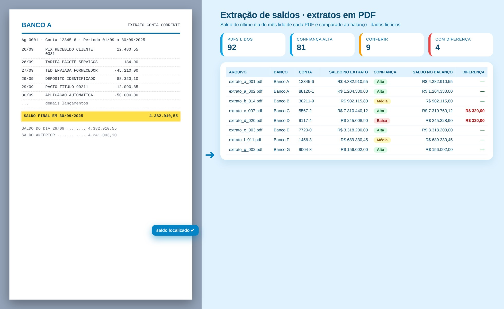

Tela de demonstração com dados fictícios
01
Lógica do negócio
02
Como resolvi com dados
1
Leitura
Extraio o texto dos PDFs com PyMuPDF; os escaneados são sinalizados.
2
Regras genéricas
Em vez de um modelo por banco, busco linhas de saldo e a coluna de saldo dos extratos corridos.
3
Data de corte
Escolho o saldo mais recente até o último dia do mês e converto o formato numérico brasileiro.
4
Comparação
Cruzo com a relação de contas do balanço e marco as diferenças.
5
Entrega
Excel com resumo, confiança (alta, média, baixa), linha encontrada e candidatos.
03
Tecnologias utilizadas
Fontes de dados
Extratos bancários (PDF)Relação de contas do balanço
Bancos e SQL
SQL Server (histórico das extrações)pandas
Processamento
PythonPyMuPDFRegexpandasopenpyxl
Interface
Script Python guiado (pasta e mês)
Entrega
Excel consolidadoConfiança por extrato
04
Funcionalidades
Leitura em lote de PDFs de vários layouts
Confiança alta, média ou baixa por saldo
Trecho do PDF de onde saiu o valor
Contas sem extrato e extratos sem conta
05
IA aplicada neste projeto
Como usei IA
Testes com PDFs simulados de layouts diferentes para validar a leitura do saldo antes de usar nos extratos reais.

Miguel Vinicius Moura Martins
Defini a regra de negócio, modelei os dados, validei os números contra o processo manual e desenvolvi a ferramenta com apoio de IA.
Conciliação bancáriaTesourariaExtração de dadosSQLPythonPyMuPDFScript Python guiado (pasta e mês)